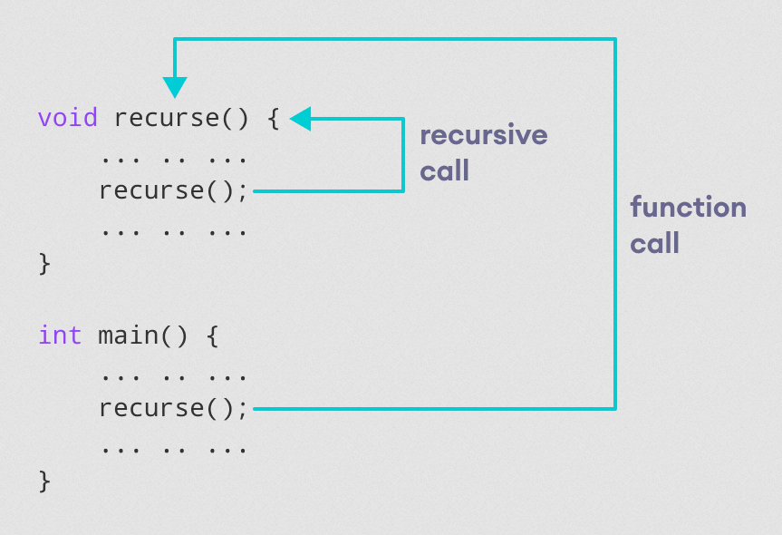

A function that calls itself is known as a recursive function. And, this technique is known as recursion.
The figure below shows how recursion works by calling itself over and over again.
The recursion continues until some condition is met.
Hence, it is very important to have terminating condition in recursive function, to prevent infinite recursion. For example, if...else statement or similar approach can be used where one branch makes the recursive call and the other doesn't.
Example: Factorial of a Number Using Recursion
In mathematics, the factorial of a non-negative integer n, denoted by n!, is the product of all positive integers less than or equal to n.
- 0! = 1
- 1! = 1
- 2! = 2 x 1
- 3! = 3 x 2 x 1
- 4! = 4 x 3 x 2 x 1
The factorial of n also equals the product of n with the next smaller factorial.
- 5! = 5 x 4 x 3 x 2 x 1 = 5 x 4!
Expressed in general form:
- n! = n x (n - 1) x (n - 2) x ... x 3 x 2 x 1 = n x (n - 1)!
#include <iostream>
using namespace std ;
int factorial (int n)
{
if (n > 1 )
return n * factorial (n - 1 );
else
return 1 ;
}
int main ()
{
int result = factorial (4 );
cout << "Factorial of 4 = " << result << endl ;
return 0 ;
}
Factorial of 4 = 24
As we can see, the factorial() function is calling itself. However, during each call, we have decreased the value of n by 1. When n is less than 1, the factorial() function ultimately returns the output.
Advantages of Recursion
- It makes code shorter and cleaner.
- Recursion is required in problems concerning data structures and advanced algorithms, such as Graph and Tree Traversal.
Disadvantages of Recursion
- It takes a lot of stack space compared to an iterative program.
- It uses more processor time.
- It can be more difficult to debug compared to an equivalent iterative program.